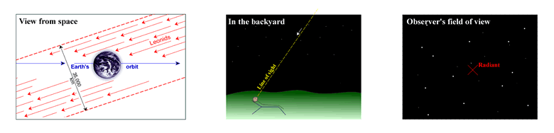

The point from which all meteors appear to emanate during a meteor shower is known as the ‘radiant’.

Credit: Jerry Lodriguss
It arises as a consequence of perspective. As shown in the diagram below, the meteoroids in the meteor stream are basically travelling parallel to each other when they hit the top of the Earth’s atmosphere. However, an observer standing in the middle of the stream will see the meteors fall to the left and right, behind and in front of him, and a meteor coming directly from the radiant would appear as a point of light rather than a streak. If the paths of all the meteors are traced back, they converge to a single point – the radiant.

This trick of perspective is more familiar to us if we stand in the middle of a train track or a road that stretches off into the distance. In this case, the parallel rails or edges of the road are seen to converge in a single point – the vanishing point.